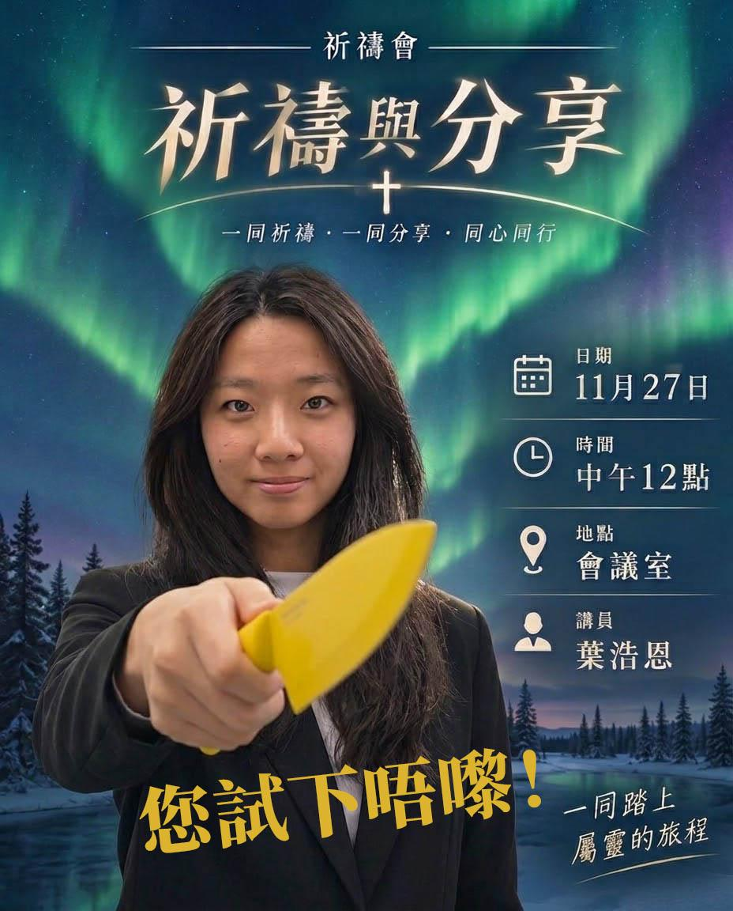

按 → 或點擊畫面翻頁
11月27日 · 中午12點 · 會議室
今日流程
禁食祈禱會
JoJo 差遣及祝福禮
- 3 分
開場禱告
今天是禁食祈禱，也是差遣禮
- 13 分
敬拜
詩歌一次唱完
- 10 分
JoJo 分享
這幾年的點滴
- 10 分
訓勉
〈行程的設計者〉
- 16 分
同事分享
她在辦公室最令你印象深刻的一件事
- 6 分
禱告與差遣
圍禱、三位同事祝福、民數記 6:24-26
- 2 分
合照
留住這一刻
12:03 · 13 分鐘
敬拜
詩歌一次唱完
12:16 · 10 分鐘
JoJo
分享
這幾年的點滴
- 0
- 1
- 2
- 3
- 4
訓勉信息
〈行程的設計者〉
詩篇 121:7-8 · 腓立比書 1:3-6 · 箴言 16:9
開場
飛去聽
別人的旅程
為別人
設計旅程
這一刻，也有一位早就把你的旅程想得很周到。
他就是神。
一、回望
JoJo 問我
可以是冒犯
也可以是
興趣
一個肯問你生日的人，是因為她想記住你。
經文 · 腓立比書 1:3-6
我每逢想念你們，就感謝我的神；
我深信那在你們心裡動了善工的，
必成全這工，直到耶穌基督的日子。
每逢想念你，我們就感謝神。
神不會中途放棄祂開始的工作。
二、前行 · 箴言 16:9
人心籌算自己的道路，
惟耶和華指引他的腳步。
航班會延誤，天氣會轉變。
真正帶領腳步的，是神。
經文 · 詩篇 121:7-8
耶和華要保護你，免受一切的災害；
他要保護你的性命。
你出你入，耶和華要保護你，
從今時直到永遠。
上行之歌：以色列人上耶路撒冷朝聖，一路走一路唱的詩
你出你入
神說：我都在。
從今時直到永遠
沒有期限，也沒有地域。
神的同在沒有離開你
三、帶著祝福出發
今天不是只用一頓飯來送你，
而是用一個空出來的心，把你交到神手上。
結語 · 帶三樣東西上路
感恩
因為神一路帶領
倚靠
因為神指引每一步
祝福
因為你會成為別人的祝福
你曾經飛去聽別人的旅程，現在你要為別人設計旅程。
願你也成為他們旅途上的祝福。
同事分享
一句話，30 秒
我最記得 JoJo 的一件事是……
她在這個辦公室最令你印象深刻的一件事。也可以這樣開頭：「感謝神，因為 JoJo……」
差遣禮
禱告與差遣
圍禱
全體站起來，圍著 JoJo，向她伸手或舉手。
祝福
三位同事，按感動為她祝福。
差遣
一同為她的新工作、新環境，也為部門禱告。
祝福 · 民數記 6:24-26
願耶和華賜福給你，保護你；
願耶和華使他的臉光照你，賜恩給你；
願耶和華向你仰臉，賜你平安。
謝謝你，JoJo
願你出入都有主同在，被祝福，被記念。
合 照